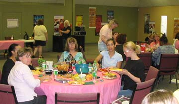
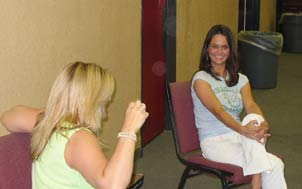
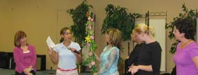
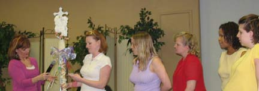
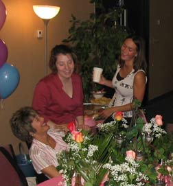
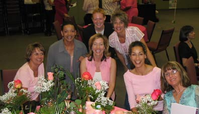
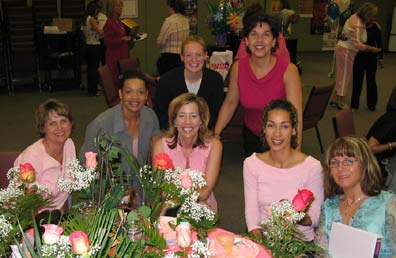

February - May 2004
| This spring I participated in a personal
development workshop at church called Winning Women. It was a great
experience where I learned a lot about myself and also made some very good
friendships. Here are some pictures from our last two
sessions. |
|
 |
 |
| Here's a candid shot of our table in early May | Renee and Jana - Renee is always entertaining and Jana is always smiling. They make a great pair. |
 Here we are with Pastor Nancy. Markeita is explaining the significance of the spirit stick that we made together. |
 |
| Here are the girls at a neighboring table who we made friends
with. They are explaining their stick. |
|
 |
 |
| Having fun, as always... |
Here's our group including our leader Gina, she was a great help and a wonderful motivator. |
 |
|
|
Here we are - the "Passionate Pinks" |
|